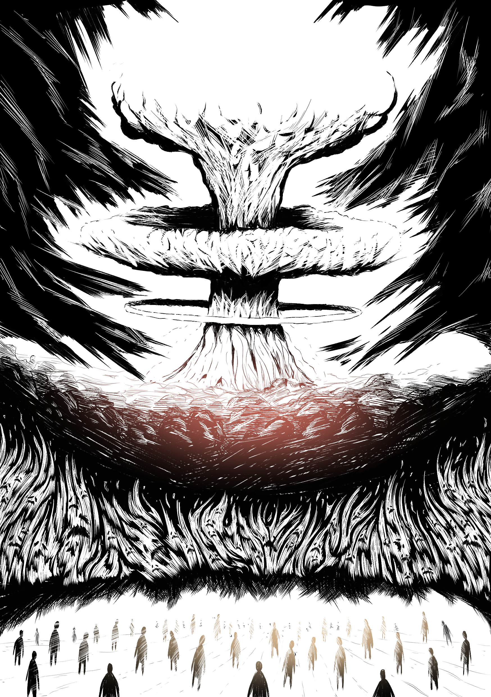
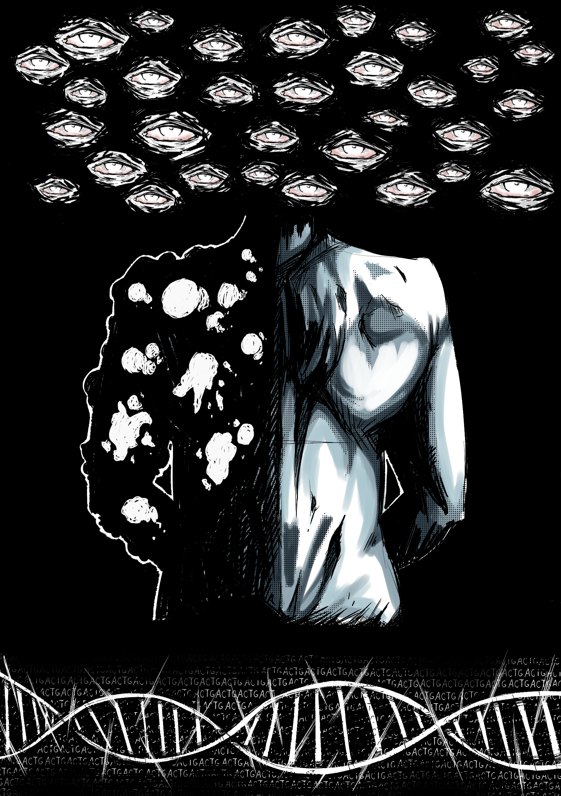
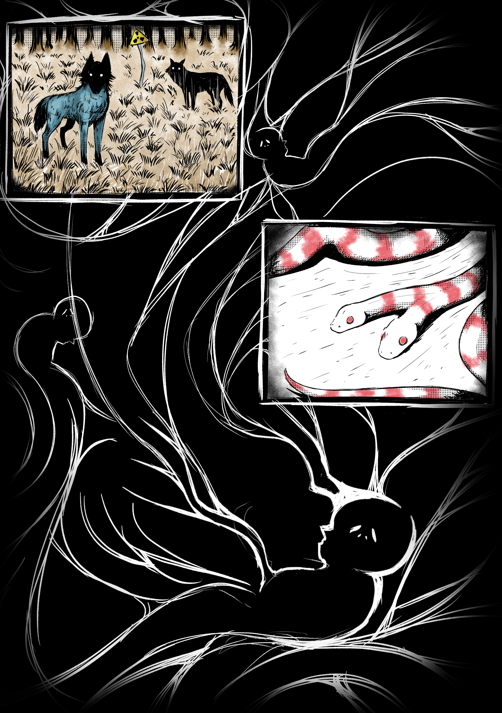
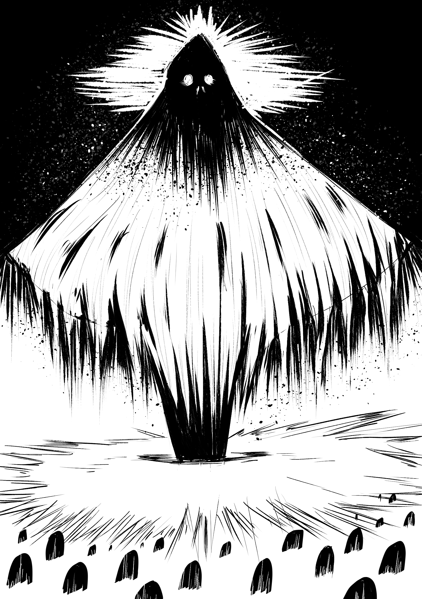
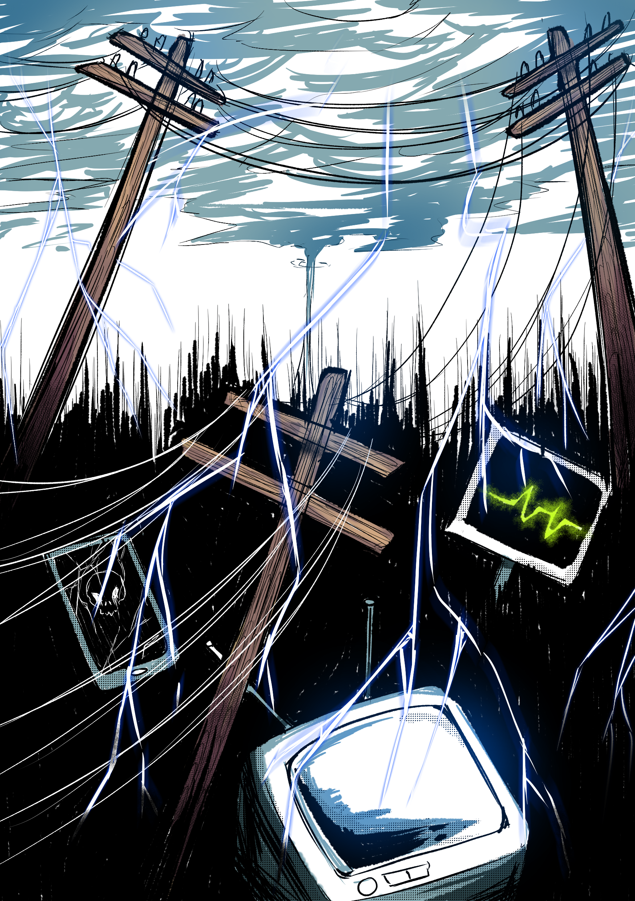
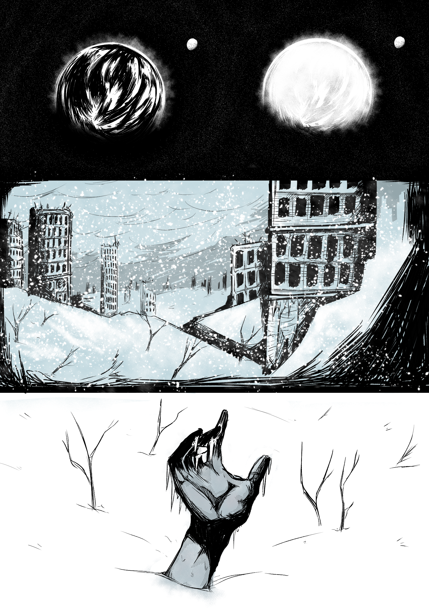

U-235
[Nuklearne bombe predstavljaju najrazornije oružje ikada stvoreno. Njihova moć ne leži samo u golemoj eksploziji, već i u složenom nizu fizičkih, kemijskih i bioloških učinaka koji slijede nakon detonacije. U djeliću sekunde oslobađa se energija koja nadmašuje sve konvencionalne eksplozije, stvarajući zasljepljujuć bljesak, snažan tlačni val, ekstremnu toplinu i opasno ionizirajuće zračenje. No razaranje ne staje u trenutku eksplozije. Radioaktivni talog koji nastaje, poznat kao fallout, može kontaminirati ogromna područja, utjecati na zdravlje ljudi i životinja te mijenjati okoliš desetljećima.]
[Toplina nastala fuzijom i fisijom trenutno zagrijava okolni zrak na oko 10 milijuna °C. Ta pregrijana plazma emitira toliko svjetla da izgleda sjajnije od sunca i može se vidjeti na stotinama kilometara udaljenosti. Vatrena kugla brzo se širi i, budući da je sastavljena od vrućeg zraka, počinje se dizati stotinama metara u sekundi. Nakon otprilike minute, uzdiže se na nekoliko kilometara visine i dovoljno se ohladi da prestane svijetliti. Hladniji okolni zrak usporava vanjske rubove oblaka, dok se unutarnji dio slobodno uzdiže brže. To stvara vakuumski efekt u kojem vanjski slojevi oblaka popunjavaju prostor iza unutarnjeg dijela, tvoreći prsten dima. Unutarnji materijal zatim se širi prema van stvarajući karakterističan gljivasti oblik. Ako eksplozija dodiruje tlo, zemlja i radioaktivni ostaci uvlače se u „stabljiku“ ispod vatrene kugle. Sudar i ionizacija čestica unutar oblaka uzrokuju munje koje ponekad udaraju u tlo.]
[Prvo što žrtve bombe dožive jest intenzivan tok fotona iz eksplozije, koji oslobađa 70–80% energije bombe. Učinci mogu uzrokovati toplinske opekline sve do trećeg stupnja, što je iznimno strašan prizor. Prve smrti posljedica su upravo ovog učinka. Sljedeći fenomen je nadtlačni front koji se širi nadzvučnom brzinom. Vidite ga prije nego što ga čujete. Taj tlačni val ima snagu odnijeti sve što mu se nađe na putu. Nakon vala stiže faza nadtlaka. Osjećaj bi bio sličan kao da ste nekoliko stotina metara pod vodom. Pritisak postupno pada, a zatim slijedi faza negativnog nadtlaka, pri čemu se smjer udara obrće. Ovaj obrnuti vjetar nastaje jer se zrak vraća kako bi ispunio prazninu stvorenu eksplozijom. Zrak se zatim postupno vraća na normalni atmosferski tlak. U ovoj fazi, požari izazvani uništenjem električnih sustava i zapaljenim krhotinama pretvaraju područje u vatrenu oluju.]

[Zatim dolaze srednjoročni učinci, poput stvaranja keloida i retinoblastoma koji su glavni simptomi. Genetska ili nasljedna oštećenja mogu se pojaviti i do četrdeset godina nakon početnog izlaganja zračenju. Mogući zdravstveni problemi uključuju: oštećenje koštene srži i smanjenje broja krvnih stanica, leukemija i drugi oblici raka, oštećenje štitnjače, neurološta oštećenja, sterilitet, razna oštećenja kože poput nekroze, imunološtka supresija, kronični umor itd.]
[Glavni odgođeni učinak je stvaranje ogromnih količina radioaktivnog materijala s vrlo dugim životnim vijekom (poluživoti[Half-Life] koji se kreću od nekoliko dana do više tisuća godina). Primarni izvor tih tvari je ostatak nakon fisijskih reakcija. Potencijalno značajan sekundarni izvor nastaje hvatanjem neurona od strane neradioaktivnih izotopa, kako unutar same bombe, tako i u okolnom okolišu. Kratkoživući izotopi stvaraju jak, ali brzo opadajući izvor zračenja. Dugovječni izotopi zrače slabije, ali kroz dugo razdoblje. Za svakih 7 puta povećanja vremena nakon detonacije (od 1 h nadalje), intenzitet zračenja pada za 90%. Npr. nakon 7 h → 10% početne vrijednosti]
[Radioaktivni produkti su najopasniji kada se spuste na tlo kao „fallout” (radioaktivni talog). Brzina kojom se talog taloži uvelike ovisi o visini na kojoj je došlo do eksplozije, a u manjoj mjeri o snazi eksplozije. Ako je eksplozija prava zračna detonacija (vatrena kugla ne dodiruje tlo), tada se, kada se ispareni radioaktivni materijali dovoljno ohlade da se kondenziraju i očvrsnu, oni pretvaraju u mikroskopske čestice. Te čestice se većinom podignu visoko u atmosferu zbog uzlaznog kretanja vatrene kugle, premda se značajna količina taloži i u nižim slojevima atmosfere zbog miješanja koje nastaje uslijed konvekcijske cirkulacije unutar vatrene kugle. Što je eksplozija veća, to se talog podiže više i brže, a manji se udio odlaže u nižim slojevima atmosfere.]
[Nuklearna eksplozija emitira zračenje u svim valnim duljinama, uključujući radiofrekvencije. To stvara EMP, koji je jači što je eksplozija više u atmosferi. Visinske detonacije mogu onesposobiti elektroniku izazivanjem jakih strujnih udara u vodljive krugove — električne mreže, telefonske vodove, televizore, radije i ostalu elektroniku. Šteta može obuhvatiti područje veće od 1000 km.]
[Sav će se taj talog spustiti na tlo djelovanjem vremenskih procesa, najkasnije kroz nekoliko mjeseci (a obično i mnogo brže). Kod eksplozija megatonskog raspona, vatrena kugla se podigne toliko visoko da ulazi u stratosferu. Stratosfera je suha i u njoj ne postoje vremenski procesi koji bi brzo vratili talog na tlo. Sitne čestice taloga mogu se spuštati mjesecima ili godinama. Takav dugo odgođeni talog izgubio je većinu svoje opasnosti do trenutka kada se spusti na zemlju i rasporedit će se na globalnoj razini. Kako prinos (snaga eksplozije) raste iznad 100 kT, sve se veći dio ukupnog taloga ubacuje u stratosferu.]

[Nuklearna zima je ekstreman klimatski scenarij koji bi mogao nastati nakon velikog nuklearnog sukoba. Nastaje zbog ogromne količine dima, prašine i čađe koju podignu detonacije nuklearnih bombi i požari koje one izazovu. Ove čestice mogu ući u gornje slojeve atmosfere i blokirati Sunčevu svjetlost, što dovodi do naglog i dugotrajnog zahlađenja Zemlje. Temperature bi mogle pasti za 10 do 20°C, a u nekim regijama i više. U ljetnim mjesecima temperature bi se mogle spustiti ispod nule, što bi bili najhladniji uvjeti u modernoj povijesti. Ekosustav čitave Zemlje bi se uništio, biljke bi uginule zbog nedostatka svijetlosti, divlje životinje bi izgubile staništa i izvore hrana, te bi usjevi propali što bi dovelo do masovne gladi u čitavom svijetu.]
